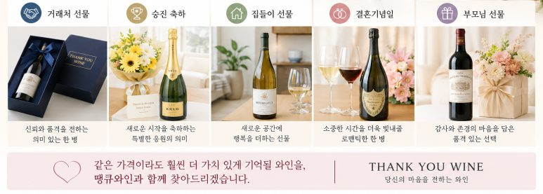

와인 선물, 가격보다 중요한 3가지
선물하기에 와인만큼 좋은 것도 드물지만, 와인만큼 고르기 어려운 선물도 없습니다.
선물하기에 와인만큼 좋은 것도 드물지만, 와인만큼 고르기 어려운 선물도 없습니다.
막상 매장에 오시면 대부분 이렇게 말씀하시죠.
물론 예산은 중요합니다. 하지만 가격만으로는 좋은 선물을 고르기 어렵습니다.
실제로 선물용 와인을 고르러 오시는 분들을 상담하다 보면, 가격보다 조금만 더 생각해도 만족도가 훨씬 높아지는 경우가 많습니다.
오늘은 실패 없는 와인 선물을 고르는 세 가지 방법을 소개해 드리겠습니다.
1. 와인에 '의미'를 담아보세요
와인은 취향이 정말 다양한 술입니다.
마치 옷을 선물할 때 사이즈와 스타일을 고민하는 것처럼, 비싼 와인을 선물했는데 상대방 취향에 맞지 않을까 걱정되는 경우도 많습니다.
이럴 때는 오히려 가격이나 화려한 스펙보다 선물에 담긴 의미가 더 오래 기억됩니다.
예를 들어 라벨에 잉어가 그려진 와인은 번영과 성공을 상징하기도 합니다.
거래처와의 좋은 관계를 기원하거나 승진을 축하하는 선물이라면 이런 스토리가 담긴 와인이 훨씬 특별하게 느껴질 수 있습니다.
결국 좋은 선물은 비싼 선물이 아니라, '왜 이 와인을 골랐는지'가 설명되는 선물입니다.
→ 건배사를 위한 와인 추천 콜레프리시오 인앤아웃'20
2. 함께 먹을 음식을 떠올려보세요
의외로 많은 분들이 놓치는 부분입니다.
선물한 와인을 그 자리에서 함께 마시는 경우가 생각보다 많습니다.
특히 식당을 예약해 둔 자리라면 어떤 음식을 먹을지 미리 알 수 있기 때문에 선택도 훨씬 쉬워집니다.
횟집이나 해산물이라면 화이트와인
스테이크나 고깃집이라면 레드와인
다양한 음식이 나오는 자리라면 샴페인이나 스파클링 와인
이렇게 음식만 고려해도 선택지가 크게 좁혀집니다.
만약 어떤 음식을 먹을지 전혀 알 수 없다면, 식전주로도 부담 없이 즐길 수 있는 스파클링 와인이나 산뜻한 화이트와인이 실패 확률이 가장 낮습니다.
3. 가격보다 '가치'가 느껴지는 와인을 선택하세요
요즘은 대부분의 와인 가격을 인터넷에서 쉽게 검색할 수 있습니다.
덕분에 정보를 얻기는 편해졌지만, 반대로 선물을 받은 순간 "아, 이 와인은 얼마 정도 하는구나." 하고 바로 알게 되는 경우도 많아졌습니다.
선물은 단순히 얼마를 지불했느냐보다 받는 사람이 얼마나 특별하게 느끼느냐가 더 중요합니다.
그래서 너무 많이 알려진 와인보다는, 아직은 대중적으로 많이 알려지지 않았지만 품질이 뛰어나고 스토리가 있는 와인이 오히려 더 좋은 선물이 되는 경우가 많습니다.
받는 사람 입장에서는 "이런 와인도 있었네?"라는 새로운 경험까지 함께 선물받는 셈이니까요.
좋은 와인 선물은 '비싼 와인'이 아니라 '잘 고른 와인'입니다
와인 선물은 가격만 정한다고 끝나는 것이 아닙니다.
누구에게 선물하는지, 어떤 의미를 담고 싶은지, 어떤 자리에서 마시게 될지를 함께 생각하면 훨씬 만족도가 높은 선물이 됩니다.
땡큐와인에서는 단순히 예산에 맞는 와인을 추천하지 않습니다.
누구에게 드리는 선물인지, 어떤 상황인지, 어떤 마음을 전하고 싶은지까지 함께 듣고 그에 맞는 와인을 큐레이션해드립니다.
거래처 선물, 승진 축하, 집들이, 결혼기념일, 부모님 선물까지.
같은 가격이라도 훨씬 더 가치 있게 기억될 와인을 함께 찾아드리겠습니다.

이 글은 땡큐와인 네이버 블로그에 먼저 올린 글이에요.